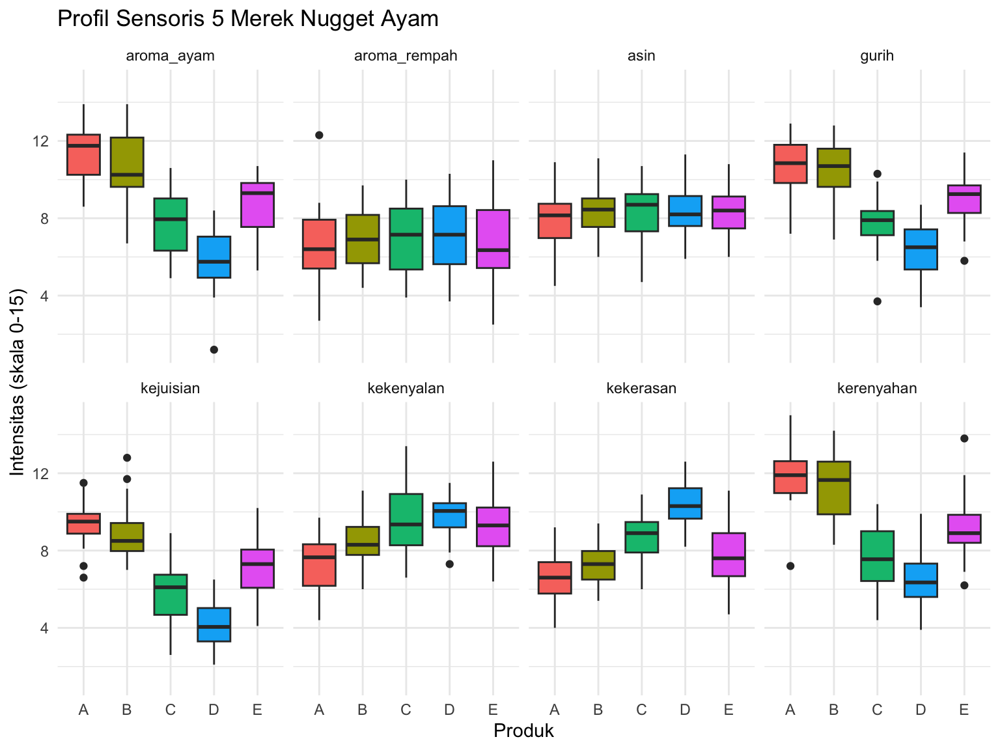
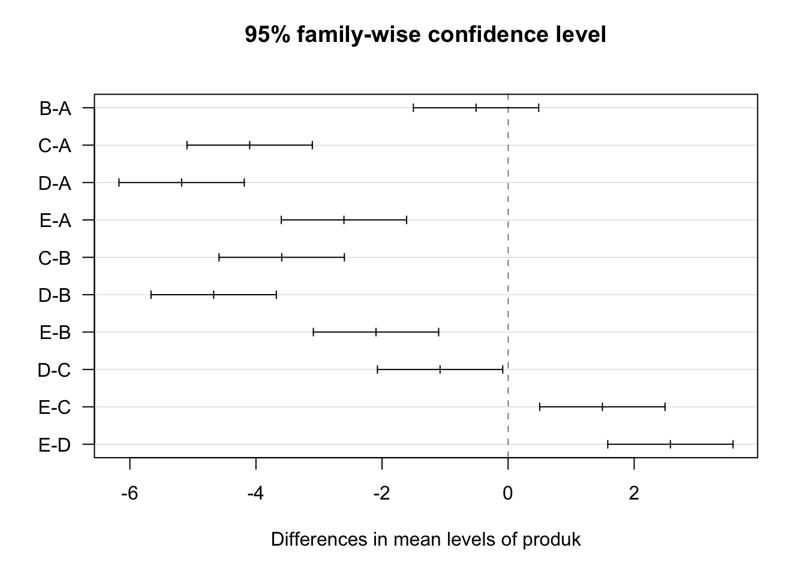
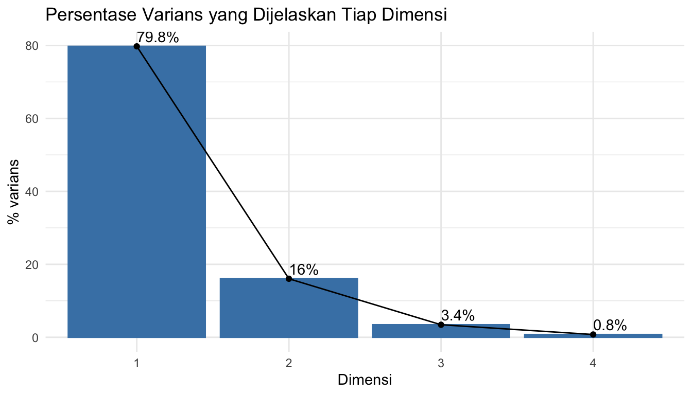
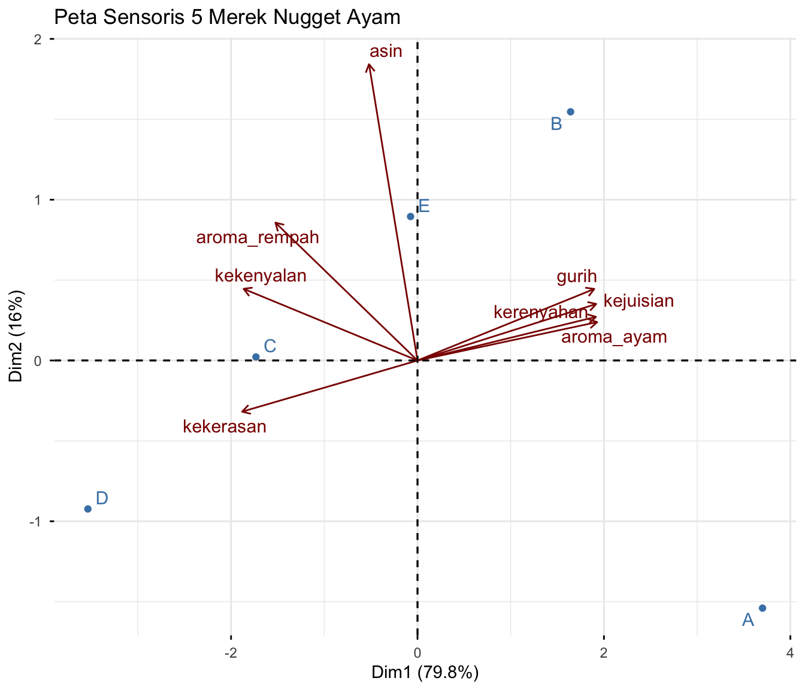

library(ggplot2)
library(dplyr)
library(tidyr)
library(readxl)
library(FactoMineR)
library(factoextra)
library(agricolae)2 Analisis Data QDA: ANOVA, Uji Lanjut, dan PCA
Membandingkan profil tekstur dan flavour antar produk
2.1 Tujuan Pembelajaran
Setelah sesi ini, mahasiswa akan mampu:
| Mengetahui | Memahami | Melakukan |
|---|---|---|
| Struktur data QDA: panelis × produk × replikasi × atribut | ANOVA menjawab “apakah produk berbeda?”, uji lanjut menjawab “produk mana yang berbeda?” | Menjalankan ANOVA dengan aov() untuk satu atribut |
| Arti nilai p dan taraf nyata \(\alpha\) = 0,05 | Mengapa panelis dimasukkan ke dalam model ANOVA | Melakukan uji lanjut Tukey dengan TukeyHSD() dan HSD.test() |
| Konsep dasar PCA: mengubah banyak atribut menjadi sedikit dimensi | Tidak semua atribut mampu membedakan produk | Membuat peta produk dengan PCA() dan fviz_pca_biplot() |
| Istilah loading, dimensi, dan % varians | Menafsirkan sumbu PCA menggunakan atribut yang menyusunnya |
2.2 Sekilas tentang QDA
Quantitative Descriptive Analysis (QDA) adalah metode di mana sekelompok panelis terlatih menilai intensitas atribut sensoris suatu produk — bukan kesukaannya. Panelis terlatih berperan seperti instrumen ukur: mereka dilatih hingga memberikan angka yang konsisten untuk konsep yang sama.
Data yang akan kita gunakan berasal dari uji QDA terhadap 5 merek nugget ayam (A, B, C, D, E) oleh 12 panelis terlatih dengan 2 kali replikasi. Setiap panelis menilai 8 atribut pada skala garis 0–15.
| Kelompok | Atribut | Definisi singkat |
|---|---|---|
| Tekstur | kerenyahan |
Bunyi dan rasa renyah lapisan luar pada gigitan pertama |
| Tekstur | kekerasan |
Gaya yang dibutuhkan untuk menggigit sampai putus |
| Tekstur | kejuisian |
Banyaknya cairan yang keluar saat dikunyah |
| Tekstur | kekenyalan |
Kemampuan sampel kembali ke bentuk semula setelah ditekan |
| Flavour | gurih |
Intensitas rasa gurih/umami |
| Flavour | asin |
Intensitas rasa asin |
| Flavour | aroma_ayam |
Intensitas aroma daging ayam |
| Flavour | aroma_rempah |
Intensitas aroma bumbu (bawang, merica) |
Total baris data: 12 panelis × 5 produk × 2 replikasi = 120 baris.
Data tersimpan pada file qda_nugget.xlsx, lembar Data. Lembar Keterangan pada file yang sama memuat definisi setiap kolom. Jika Anda ingin menginput data hasil praktikum kelompok Anda sendiri, gunakan template_input_qda.xlsx yang formatnya sudah sesuai — cukup hapus baris contoh berwarna kuning, isi datanya, lalu ganti nama file pada perintah read_excel() di bawah.
2.3 Memuat Data
qda <- as.data.frame(read_excel("assets/data/qda_nugget.xlsx", sheet = "Data"))
# Kolom kategorikal harus berupa factor
qda$panelis <- as.factor(qda$panelis)
qda$produk <- as.factor(qda$produk)
qda$replikasi <- as.factor(qda$replikasi)
str(qda)'data.frame': 120 obs. of 11 variables:
$ panelis : Factor w/ 12 levels "P01","P02","P03",..: 1 1 1 1 1 1 1 1 1 1 ...
$ produk : Factor w/ 5 levels "A","B","C","D",..: 1 1 2 2 3 3 4 4 5 5 ...
$ replikasi : Factor w/ 2 levels "1","2": 1 2 1 2 1 2 1 2 1 2 ...
$ kerenyahan : num 10.9 12.8 8.3 12.6 9.8 8.9 5.1 6.1 8.7 7.6 ...
$ kekerasan : num 7.1 7.3 9.4 7.8 10.9 9.4 12.6 11.5 8.9 7.8 ...
$ kejuisian : num 8.9 9.1 9.5 7.8 4 2.6 2.1 3.6 5.6 5.1 ...
$ kekenyalan : num 7.5 6.9 8.5 9.4 11.8 11.5 10.6 10.3 12.4 12.6 ...
$ gurih : num 12.7 11.6 12 9.8 8.6 7.4 6.3 6.7 9.3 10.2 ...
$ asin : num 8.5 6.2 8.5 10 8.2 8 9.1 7.5 8.2 9.1 ...
$ aroma_ayam : num 8.7 11.2 9.8 12.1 7.5 4.9 4 5.9 9.4 7.7 ...
$ aroma_rempah: num 8.3 5.7 9.7 8.1 9.1 7.7 8 7.9 5.6 5.2 ...head(qda)Think-aloud (I Do): “Sebelum menganalisis apa pun, saya memeriksa apakah rancangannya lengkap. Saya jalankan
table(qda$panelis, qda$produk)— kalau semua selnya berisi 2, artinya setiap panelis menilai setiap produk sebanyak dua kali. Rancangan yang lengkap dan seimbang membuat ANOVA jauh lebih mudah ditafsirkan.”
table(qda$panelis, qda$produk)
A B C D E
P01 2 2 2 2 2
P02 2 2 2 2 2
P03 2 2 2 2 2
P04 2 2 2 2 2
P05 2 2 2 2 2
P06 2 2 2 2 2
P07 2 2 2 2 2
P08 2 2 2 2 2
P09 2 2 2 2 2
P10 2 2 2 2 2
P11 2 2 2 2 2
P12 2 2 2 2 22.4 Eksplorasi Awal
# Rata-rata setiap atribut untuk setiap produk
tabel_rata <- aggregate(cbind(kerenyahan, kekerasan, kejuisian, kekenyalan,
gurih, asin, aroma_ayam, aroma_rempah) ~ produk,
data = qda, FUN = mean)
tabel_rata_bulat <- tabel_rata
tabel_rata_bulat[, -1] <- round(tabel_rata_bulat[, -1], 2)
tabel_rata_bulatUntuk membuat grafik semua atribut sekaligus, data perlu diubah ke format panjang — satu baris untuk satu kombinasi produk × atribut × panelis:
qda_panjang <- pivot_longer(qda,
cols = kerenyahan:aroma_rempah,
names_to = "atribut",
values_to = "intensitas")
head(qda_panjang)ggplot(qda_panjang, aes(x = produk, y = intensitas, fill = produk)) +
geom_boxplot() +
facet_wrap(~ atribut, ncol = 4) +
labs(title = "Profil Sensoris 5 Merek Nugget Ayam",
x = "Produk", y = "Intensitas (skala 0-15)") +
theme_minimal() +
theme(legend.position = "none")
Amati grafik ini sebelum menghitung apa pun. Pada atribut mana kotak-kotaknya jelas terpisah antar produk? Pada atribut mana kotak-kotaknya bertumpuk? Dugaan Anda dari grafik akan kita uji dengan ANOVA di bagian berikutnya.
2.5 ANOVA untuk Satu Atribut
Pertanyaannya: apakah kelima produk berbeda nyata dalam kerenyahan?
- \(H_0\) (hipotesis nol): rata-rata kerenyahan kelima produk sama
- \(H_1\) (hipotesis alternatif): paling tidak ada satu produk yang berbeda
model_renyah <- aov(kerenyahan ~ produk + panelis, data = qda)
summary(model_renyah) Df Sum Sq Mean Sq F value Pr(>F)
produk 4 479.1 119.78 77.855 < 2e-16 ***
panelis 11 127.9 11.63 7.559 1.99e-09 ***
Residuals 104 160.0 1.54
---
Signif. codes: 0 '***' 0.001 '**' 0.01 '*' 0.05 '.' 0.1 ' ' 1Cara membacanya:
| Kolom | Arti |
|---|---|
Df |
Derajat bebas. Untuk 5 produk \(\rightarrow\) 5 - 1 = 4 |
F value |
Rasio keragaman antar produk terhadap keragaman sisa. Makin besar, makin kuat bukti adanya perbedaan |
Pr(>F) |
Nilai p. Inilah yang kita baca. Jika < 0,05 \(\rightarrow\) tolak \(H_0\) |
*** |
Penanda tingkat signifikansi (*** = p < 0,001) |
Mengapa
panelisikut dimasukkan ke dalam model? Setiap panelis punya kebiasaan menggunakan skala secara berbeda — ada yang cenderung memberi nilai tinggi, ada yang pelit. Perbedaan itu bukan efek produk, tetapi tetap menambah keragaman data. Dengan menuliskan+ panelis, keragaman antar panelis “dikeluarkan” dari sisa (residual), sehingga uji terhadap efek produk menjadi lebih peka. Ini adalah gagasan yang sama dengan rancangan acak kelompok (RAK), dengan panelis sebagai kelompok.
2.5.1 Hinge Question
Sebelum melanjutkan, jawablah: Hasil ANOVA menunjukkan nilai p untuk
produksebesar 2e-16. Apa kesimpulan yang benar?
- Kelima produk berbeda nyata satu sama lain
- Paling tidak ada satu produk yang berbeda nyata dari yang lain, tetapi kita belum tahu yang mana
- Produk A adalah yang paling renyah
- Panelis menilai dengan tidak konsisten
Jawaban: B. ANOVA hanya menjawab “apakah ada perbedaan”, bukan “produk mana yang berbeda”. Untuk itu kita memerlukan uji lanjut.
2.6 Uji Lanjut (Post-hoc)
2.6.1 Tukey HSD
Uji Tukey membandingkan semua pasangan produk, sambil mengendalikan peluang salah menyimpulkan akibat banyaknya perbandingan.
tukey_renyah <- TukeyHSD(model_renyah, which = "produk")
tukey_renyah Tukey multiple comparisons of means
95% family-wise confidence level
Fit: aov(formula = kerenyahan ~ produk + panelis, data = qda)
$produk
diff lwr upr p adj
B-A -0.5083333 -1.5023904 0.48572372 0.6164750
C-A -4.1000000 -5.0940571 -3.10594294 0.0000000
D-A -5.1791667 -6.1732237 -4.18510961 0.0000000
E-A -2.6041667 -3.5982237 -1.61010961 0.0000000
C-B -3.5916667 -4.5857237 -2.59760961 0.0000000
D-B -4.6708333 -5.6648904 -3.67677628 0.0000000
E-B -2.0958333 -3.0898904 -1.10177628 0.0000006
D-C -1.0791667 -2.0732237 -0.08510961 0.0262983
E-C 1.4958333 0.5017763 2.48989039 0.0005788
E-D 2.5750000 1.5809429 3.56905706 0.0000000Setiap baris adalah satu pasangan produk. Kolom p adj adalah nilai p yang sudah dikoreksi: jika < 0,05, kedua produk itu berbeda nyata.
plot(tukey_renyah, las = 1)
Cara membaca grafik ini: setiap garis adalah selang kepercayaan untuk selisih rata-rata sepasang produk. Jika garisnya memotong angka nol (garis putus-putus), kedua produk tersebut tidak berbeda nyata.
2.6.2 Notasi Huruf
Untuk laporan praktikum, hasil uji lanjut biasanya disajikan sebagai notasi huruf: produk dengan huruf yang sama berarti tidak berbeda nyata.
hsd_renyah <- HSD.test(model_renyah, "produk", group = TRUE)
hsd_renyah$groupsThink-aloud (I Do): “Saya membaca tabel ini dari atas ke bawah — produk sudah diurutkan dari rata-rata tertinggi. Produk yang berbagi huruf yang sama tidak berbeda nyata. Inilah bentuk yang saya salin ke tabel laporan, dengan huruf ditulis sebagai superskrip di belakang nilai rata-rata ± simpangan baku.”
2.7 ANOVA untuk Semua Atribut Sekaligus
Mengulang kode di atas delapan kali akan melelahkan dan rawan salah salin. Kita bisa membuat R melakukannya secara otomatis:
atribut <- c("kerenyahan", "kekerasan", "kejuisian", "kekenyalan",
"gurih", "asin", "aroma_ayam", "aroma_rempah")
nilai_p <- sapply(atribut, function(a) {
rumus <- as.formula(paste(a, "~ produk + panelis"))
model <- aov(rumus, data = qda)
# baris pertama tabel ANOVA adalah efek 'produk'
summary(model)[[1]][["Pr(>F)"]][1]
})
hasil_anova <- data.frame(
atribut = atribut,
p_value = signif(nilai_p, 3),
kesimpulan = ifelse(nilai_p < 0.05,
"Berbeda nyata", "Tidak berbeda nyata")
)
hasil_anovaInilah temuan terpenting dari sebuah studi QDA. Atribut dengan nilai p kecil adalah atribut yang mampu membedakan produk — atribut inilah yang layak dibahas. Atribut dengan nilai p besar berarti kelima produk terasa sama pada atribut tersebut. Hasil “tidak berbeda nyata” bukan kegagalan praktikum: itu informasi yang sah, misalnya bahwa semua merek memakai tingkat penggaraman yang serupa.
2.8 PCA: Memetakan Produk
Kita sekarang punya 8 atribut. Membandingkan 5 produk pada 8 sumbu sekaligus sulit dilakukan di kepala. Principal Component Analysis (PCA) memampatkan 8 atribut itu menjadi dua atau tiga dimensi baru yang dapat digambar sebagai peta.
Gagasannya sederhana: atribut yang bergerak bersama-sama (misalnya produk yang renyah cenderung juga juicy) dianggap membawa informasi yang mirip, sehingga bisa diringkas menjadi satu sumbu.
2.8.1 Menyiapkan Tabel Rata-rata
Pada QDA, PCA dilakukan terhadap tabel rata-rata produk × atribut — bukan terhadap 120 baris data mentah — karena yang ingin kita petakan adalah produknya, bukan panelisnya.
tabel_pca <- tabel_rata[, -1] # buang kolom 'produk'
rownames(tabel_pca) <- tabel_rata$produk # jadikan nama baris
round(tabel_pca, 2)2.8.2 Menjalankan PCA
hasil_pca <- PCA(tabel_pca, scale.unit = TRUE, graph = FALSE)Mengapa
scale.unit = TRUE? Perintah ini menstandarkan setiap atribut sehingga semuanya memiliki bobot yang sama. Tanpa itu, atribut yang kebetulan memiliki rentang nilai lebar akan mendominasi peta hanya karena satuannya, bukan karena informasinya lebih penting.
2.8.3 Berapa Dimensi yang Perlu Dilihat?
round(hasil_pca$eig, 2) eigenvalue percentage of variance cumulative percentage of variance
comp 1 6.38 79.76 79.76
comp 2 1.28 16.05 95.81
comp 3 0.27 3.43 99.24
comp 4 0.06 0.76 100.00fviz_eig(hasil_pca, addlabels = TRUE,
barfill = "steelblue", barcolor = "steelblue") +
labs(title = "Persentase Varians yang Dijelaskan Tiap Dimensi",
x = "Dimensi", y = "% varians") +
theme_minimal()
Kolom ketiga tabel eig adalah persentase kumulatif. Jika dua dimensi pertama sudah menjelaskan lebih dari ±70% keragaman, peta dua dimensi sudah cukup mewakili data.
2.8.4 Peta Produk dan Atribut
fviz_pca_biplot(hasil_pca,
repel = TRUE,
col.var = "darkred", # warna panah atribut
col.ind = "steelblue", # warna titik produk
title = "Peta Sensoris 5 Merek Nugget Ayam")
Cara membaca biplot:
| Yang Anda lihat | Artinya |
|---|---|
| Titik biru | Produk. Dua produk yang berdekatan memiliki profil sensoris yang mirip |
| Panah merah | Atribut. Arah panah menunjukkan ke mana produk dengan intensitas tinggi pada atribut itu berada |
| Panah panjang | Atribut tersebut terwakili dengan baik pada peta ini |
| Dua panah searah | Kedua atribut berkorelasi positif |
| Dua panah berlawanan arah | Kedua atribut berkorelasi negatif |
| Panah tegak lurus | Kedua atribut tidak berkorelasi |
| Produk searah dengan panah | Produk itu tinggi pada atribut tersebut |
Think-aloud (I Do): “Saya menafsirkan peta ini dari sumbunya terlebih dahulu, bukan dari titik produknya. Saya lihat atribut apa yang berada di ujung kanan Dimensi 1 dan apa yang di ujung kiri — dari situ saya beri nama sumbunya, misalnya ‘renyah dan juicy’ versus ‘keras dan kenyal’. Setelah sumbunya punya nama, posisi produk menjadi mudah dijelaskan dalam satu kalimat.”
Untuk melihat sumbangan tiap atribut terhadap kedua dimensi secara angka:
round(hasil_pca$var$coord[, 1:2], 2) Dim.1 Dim.2
kerenyahan 0.98 0.14
kekerasan -0.96 -0.16
kejuisian 0.98 0.18
kekenyalan -0.96 0.23
gurih 0.97 0.23
asin -0.27 0.94
aroma_ayam 0.99 0.12
aroma_rempah -0.78 0.44Nilai ini disebut loading: makin mendekati +1 atau -1, makin kuat atribut tersebut menyusun dimensi yang bersangkutan.
Peringatan penting. Peta PCA hanya meringkas rata-rata; ia tidak menguji apakah perbedaannya nyata. Dua produk bisa tampak berjauhan pada peta padahal ANOVA menyatakan mereka tidak berbeda. Karena itu, PCA selalu dibaca bersama tabel hasil ANOVA — bukan menggantikannya. Perhatikan juga bahwa atribut yang tidak nyata pada ANOVA tetap digambar sebagai panah pada peta, padahal panah itu hanya menggambarkan galat pengukuran.
2.9 Menyusun Kesimpulan
Sebuah kesimpulan QDA yang baik menggabungkan ketiga analisis tadi:
- ANOVA \(\rightarrow\) atribut mana yang mampu membedakan produk?
- Uji lanjut \(\rightarrow\) pada atribut tersebut, produk mana yang berbeda dari mana?
- PCA \(\rightarrow\) bagaimana kelima produk tersusun secara keseluruhan, dan atribut apa yang menjelaskan susunan itu?
Latihan menulis: Susun satu paragraf (4–6 kalimat) yang menjawab ketiga pertanyaan di atas untuk data nugget ini. Sebutkan nilai p dan notasi huruf sebagai pendukung, bukan sebagai isi utama kalimat.
2.10 Latihan (You Do)
2.10.1 Latihan 1: ANOVA dan Uji Lanjut Atribut Lain
- Jalankan ANOVA untuk atribut
aroma_ayam:
model_aroma <- aov(aroma_ayam ~ produk + panelis, data = qda)
summary(model_aroma)- Lakukan uji lanjut dan tampilkan notasi hurufnya:
HSD.test(model_aroma, "produk", group = TRUE)$groups- Ulangi untuk
asin. Apa yang Anda temukan pada tabel notasi hurufnya, dan mengapa hasilnya seperti itu?
2.10.2 Latihan 2: Tabel Laporan
Buat tabel rata-rata ± simpangan baku gurih untuk setiap produk:
qda %>%
group_by(produk) %>%
summarise(rerata = round(mean(gurih), 2),
sd = round(sd(gurih), 2))Kemudian tambahkan notasi huruf dari uji lanjut ke dalam tabel tersebut secara manual, seperti format yang lazim dipakai pada laporan praktikum.
2.10.3 Latihan 3: Challenges
- Jalankan ulang PCA hanya menggunakan atribut yang berbeda nyata menurut ANOVA. Apakah posisi produk pada peta berubah? Apakah persentase varians Dimensi 1 naik atau turun? Mengapa?
atribut_nyata <- hasil_anova$atribut[hasil_anova$p_value < 0.05]
pca2 <- PCA(tabel_pca[, atribut_nyata], scale.unit = TRUE, graph = FALSE)
fviz_pca_biplot(pca2, repel = TRUE)- Tambahkan efek interaksi
produk:paneliske dalam model ANOVA untukkerenyahan. Interaksi yang nyata menandakan panelis tidak sepakat dalam mengurutkan produk. Apakah panel ini sepakat?
model_interaksi <- aov(kerenyahan ~ produk + panelis + produk:panelis,
data = qda)
summary(model_interaksi)- Buat grafik profil garis (bukan boxplot) yang menampilkan rata-rata kelima produk pada kedelapan atribut sekaligus.
qda_panjang %>%
group_by(produk, atribut) %>%
summarise(rerata = mean(intensitas), .groups = "drop") %>%
ggplot(aes(x = atribut, y = rerata, group = produk, color = produk)) +
geom_line(linewidth = 1) +
geom_point(size = 2) +
labs(x = NULL, y = "Intensitas rata-rata (0-15)") +
theme_minimal() +
theme(axis.text.x = element_text(angle = 45, hjust = 1))2.11 Ringkasan
Dalam sesi ini kita telah mempelajari:
- Struktur data QDA: panelis × produk × replikasi × atribut dalam format panjang
- ANOVA dengan aov(atribut ~ produk + panelis) dan alasan memasukkan panelis ke dalam model
- Membaca nilai p untuk menentukan atribut mana yang mampu membedakan produk
- Uji lanjut Tukey dengan TukeyHSD() dan notasi huruf dengan HSD.test()
- Menjalankan ANOVA untuk semua atribut sekaligus menggunakan sapply()
- PCA pada tabel rata-rata produk × atribut dengan PCA() dan menafsirkan biplot
- Bahwa PCA meringkas, sedangkan ANOVA menguji — keduanya saling melengkapi
Bacaan lanjutan. Bagi yang ingin mendalami, buku Analyzing Sensory Data with R (Lê & Worch, CRC Press, 2015) membahas topik ini jauh lebih dalam, termasuk penilaian kinerja panel dan panelis serta penambahan elips kepercayaan pada peta produk melalui paket SensoMineR.